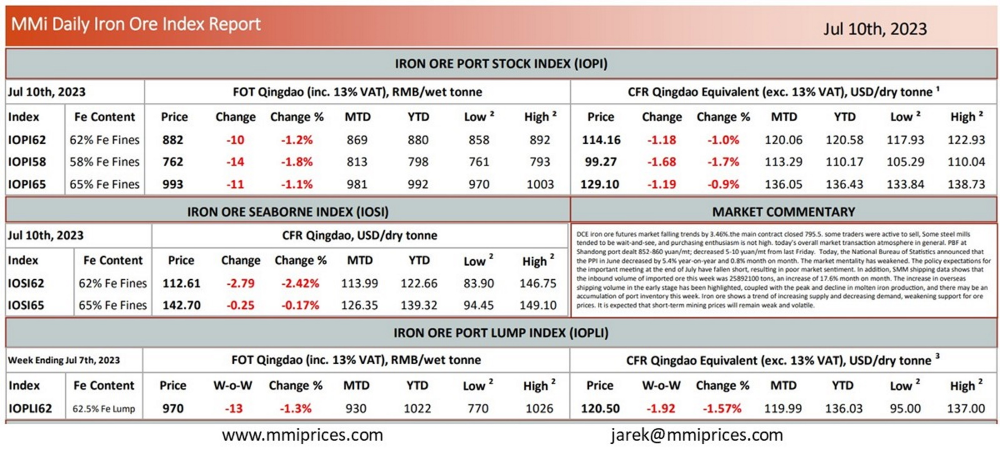

DCE iron ore futures market falling trends by 3.46%.the main contract closed 795.5. some traders were active to sell, Some steel mills tended tobe wait-and-see, and purchasing enthusiasm is not high. today’s overall market transaction atmosphere in general. PBF at Shandong port dealt 852-860 yuan/mt; decreased 5-10 yuan/mt from last Friday. Today, the National Bureau of Statistics announced that the PPI in June decreased by 5.4% year-on-year and 0.8% month on month. The market mentality has weakened. The policy expectations for the important meeting at the end of July have fallen short, resulting in poor market sentiment. In addition, SMM shipping data shows that the inbound volume of imported ore this week was 25892100 tons, an increase of 17.6% month on month. The increase in overseas shipping volume in the early stage has been highlighted, coupled with the peak and decline in molten iron production, and there may be an accumulation of port inventory this week. Iron ore shows a trend of increasing supply and decreasing demand, weakening support for ore prices. It is expected that short-term mining prices will remain weak and volatile

Download PDFSource: Metals Market Index (MMi)